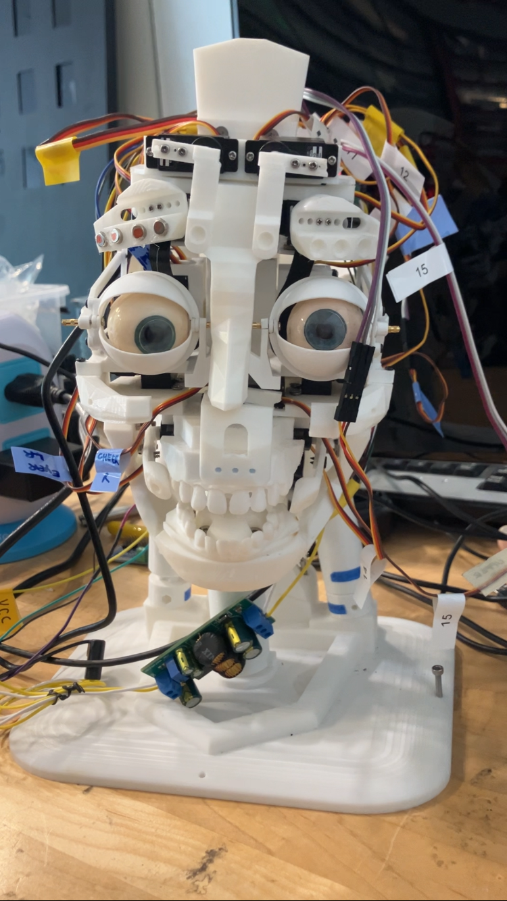

Conversational Robotic Head
This robot head is capable of holding a conversation with a user through a UI, with a built-in microphone and speaker set up, as well as eye tracking. These heads are interfaced with OpenAI Realtime API to facilitate real-time conversation with the user, and the facial skeleton is modified from an open-source design InMoov Head i2.
I constructed the final robot design after modifying specific parts to meet eye-tracking requirements, set up hardware and programmed expression control for the robot head. I also created documentation regarding the construction and use of the head.
This project was intended for a study on how users perceive the naturalness, likeability, and social presence of conversational AI based on the degree of gaze behavior of each robotic head. The results of this experiment could be implemented to make users more comfortable interacting with humanoid robots, allowing discussions of personal topics, affecting sectors such as education, health care, and therapy.

Cesar, in his development, with the skeleton assembled and servos wired.
Calibration UI
Eye tracking